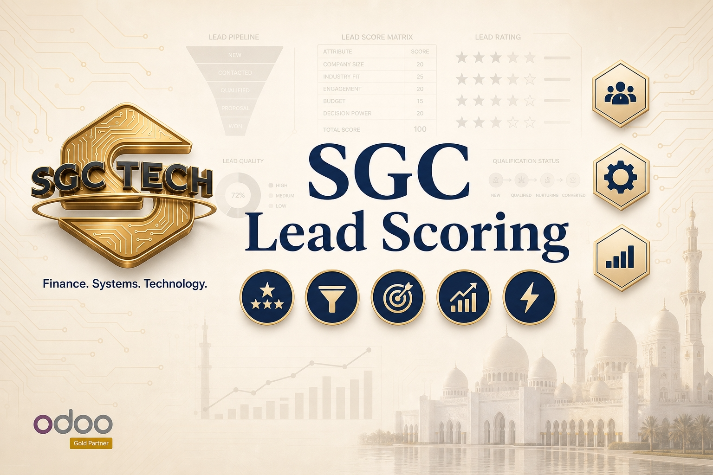

Module Screenshots

Intelligent Lead Profile
View AI probability gauges, score breakdowns, and comprehensive enrichment reports directly within the standard Odoo CRM form.

AI-Powered Lead Scoring with Multi-LLM Support, automated customer research, and intelligent probability forecasting.
Every lead in your CRM represents a potential opportunity, but not all are created equal. SGC Lead Scoring uses Large Language Models (LLMs) to intelligently evaluate lead quality based on form completeness, requirement clarity, and automated web research. By assigning an AI probability score, we help your sales team prioritize high-intent prospects and automate the qualification bottleneck.
Seamlessly integrate with OpenAI, Groq, HuggingFace, or Anthropic. Choose the best reasoning engine for your industry and lead types.
The system automatically researches prospects from public sources to enrich lead profiles with real-world context before your first call.
Probability scoring grounded in LLM reasoning, considering engagement logs, clarity of requirements, and historical patterns.
Enrich leads individually or in batches with a single click, instantly generating comprehensive analysis reports within Odoo CRM.
Visual progress bars and gauges showing completeness, clarity, and engagement scores for a transparent view of AI logic.
Detailed AI analysis reports are logged directly into internal notes, providing sales reps with a ready-made dossier for every lead.
View AI probability gauges, score breakdowns, and comprehensive enrichment reports directly within the standard Odoo CRM form.
Empower your sales team to focus on leads with the highest probability of closing, maximizing ROI on every hour worked.
Remove the subjectivity of lead qualification with standardized, data-driven AI evaluation criteria.
Save your sales reps hours of manual LinkedIn and web searching by letting the AI generate prospect dossiers automatically.
Prioritize daily outreach
Audit pipeline quality
| Module | sgc_lead_scoring |
|---|---|
| Version | 19.0.1.0.0 |
| Category | CRM |
| License | OPL-1 |
| Dependencies | base, crm, mail |
| AI Engines | OpenAI, Groq, HuggingFace, Anthropic |
Our modules are built with Enterprise Readiness in mind. We focus on clean code, seamless integration, and superior UI/UX to ensure that your Odoo experience is not just functional, but exceptional. Each SGC module undergoes rigorous testing to guarantee reliability and performance in high-stakes environments.